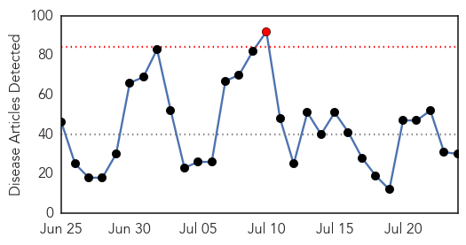
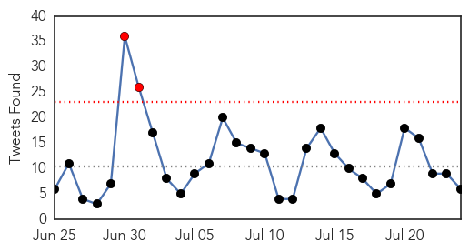
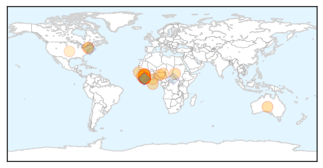
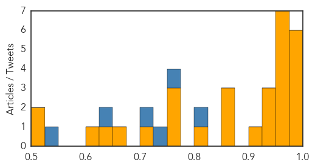

Ebola
30-Day Web Trend
1 alerts, 0 warnings

30-Day Twitter Trend
2 alerts, 0 warnings

Article Locations
Article Confidences
Top Articles:
- 1.000
- Ebola: Not yet over
- 0.999
- Australian nurse tests negative for Ebola
- 0.990
- West Africa Situation Worse Than Worst News Report, But Let's Not Fear but Help Africa
- 0.985
- Suspected Ebola patient dies after being denied treatment
- 0.984
- Gambia Gives Sierra Leone Half A Million Dollar To Fight Ebola
- 0.983
- Why I went to fight Ebola… three times
- 0.974
- No trace of new Ebola transmission
- 0.968
- Measures Taken To Tackle Polio Helped Prevent Nigeria From Ebola Epidemic
- 0.968
- Ebola burial teams seek bribes in Sierra Leone, health official says « Awoko Newspaper
- 0.964
- UN agency assures Sierra Leone of support in fight against Ebola
- 0.959
- Encouraging efforts in restoring our ruined health sector
- 0.955
- New Ebola death rate hits two in Liberia
- 0.952
- IPC Tops 3-Day Agenda
- 0.939
- American- Based Company Develops a New Device To Fight Against Ebola Virus
- 0.931
- Another experimental drugs arrive for Ebola
- 0.926
- From New York to the Ebola frontlines
- 0.910
- Distinct lineages of Ebola virus in Guinea during the 2014 West African epidemic
- 0.873
- Nigeria Marks A Year Without Polio Cases
- 0.867
- British Red Cross blog
- 0.867
- Ebola Outbreak Appeal Archives
- 0.813
- LCP, PREVAIL launch awareness on Ebola Vaccine Study
- 0.774
- president koroma off to washington – April 2015
- 0.767
- Welcome to the Expotimes News
- 0.765
- Eid prayers focused on Ebola eradication
- 0.706
- Top 7 Infectious Disease News Stories
- 0.662
- Hacked traffic sign warns drivers, 'Ebola outbreak ahead'
- 0.632
- Ebola Doctor Who Thought He Was on His Death Bed Reveals the Key Moment That Showed Him Something ‘Profound’ About God
- 0.617
- Ebola Survivors battling side effects in Margibi
- 0.515
- Sierra Leone News: UNMEER closure will not affect UN support-NERC CEO « Awoko Newspaper
- 0.513
- President of ebola survivors commend convalescent plasma transfusion « Awoko Newspaper
Top Tweets:
- 0.938
- Hacked traffic sign warns drivers, 'Ebola outbreak ahead' - Mashable - Mashable http://t.co/iDEygMdJ4v ebola EVD
- 0.923
- Sierra Leone Athletes Try to Regain Stride After Halting for Ebola - Voice of America http://t.co/8NywUsOOhB ebola EVD
- 0.881
- Présentation de l'équipe Africa Stop Ebola ! AfricaStopEbola http://t.co/RLYbEJSvNt
- 0.861
- Sierra Leone begins treating Ebola patients (there were 3 new cases diagnosed this week) with survivors' plasma: http://t.co/XgUFq8pohE
- 0.814
- RT: [PHOTO] Health workers participate in simulation exercise on Ebola infection prevention & control in Sierra Leone. http://t…
- 0.795
- Présentation de l'équipe ! Kaloum Conakry AfricaStopEbola Ebola Guinea http://t.co/acQHgWNzGV
- 0.784
- Report Jour 2 : Résidence à la bluezone de Kaloum Conakry AfricaStopEbola Ebola Guinea http://t.co/MZdYsXBtDc
- 0.784
- Report Jour 1 : Résidence à la bluezone de Kaloum Conakry AfricaStopEbola Ebola Guinea http://t.co/ZoOwEf9vMX
- 0.773
- RT: Lets keep Ebola out of Liberia: keep washing hands w/soap/chlorine/water and follow other prevention methods. http://…
- 0.614
- 24 July - news pouch on avianflu avianinfluenza Ebola EbolaResponse MERS is here: http://t.co/SoiEd1LBxJ
- 0.589
- 23 July - news pouch on avianflu avianinfluenza Ebola EbolaResponse MERS is here: http://t.co/TUmv28WWFC
- 0.587
- RT: @AfricaStopEbola AfricaStopEbola Guinée: concours de chants pour projet Ebola http://t.co/3GDZrO3jpQ via
- 0.577
- New containment system allows for transport of multiple Ebola patients | Local ... - KETV Omaha http://t.co/zw0cFPQqxZ ebola EVD
- 0.559
- Sierra Leone News: For rescuing 200 ebola orphans…'Build on book' - Awoko:... http://t.co/0vtGlXB8A5
- 0.541
- RT: jeudi >>> Mission Humanitaire AfricaStopEbola en Guinée et collecte de Data pour un rapport pour USaid
- 0.519
- Sierra Leone Athletes Try to Regain Stride After Halting for Ebola - Voice of America http://t.co/H974uc5bIA
Hepatitis
30-Day Web Trend
1 alerts, 0 warnings

30-Day Twitter Trend
1 alerts, 0 warnings
Article Locations

Article Confidences

Top Articles:
- 0.831
- World Health Organization calls for urgent action to curb hepatitis — MercoPress
- 0.816
- WHO Unsafe Injections Major Cause of Hepatitis Death
- 0.812
- Unsafe injections major cause of Hepatitis death: WHO
- 0.806
- Screening camp for killer Hepatitis from July 29
- 0.724
- Hepatitis B among children plummets
- 0.709
- Malaria vaccine gets regulatory nod
- 0.669
- First Malaria Vaccine Gains Recommendation After 28-Year Odyssey
- 0.616
- Rural docs want looser rules for Hepatitis C treatment
- 0.610
- Malaria vaccine gets regulatory nod
- 0.606
- Malaria vaccine gets regulatory nod
- 0.519
- Hepatitis spread causes concern in lead up to health week
Top Tweets:
-
No tweets found for Jul 24, 2015